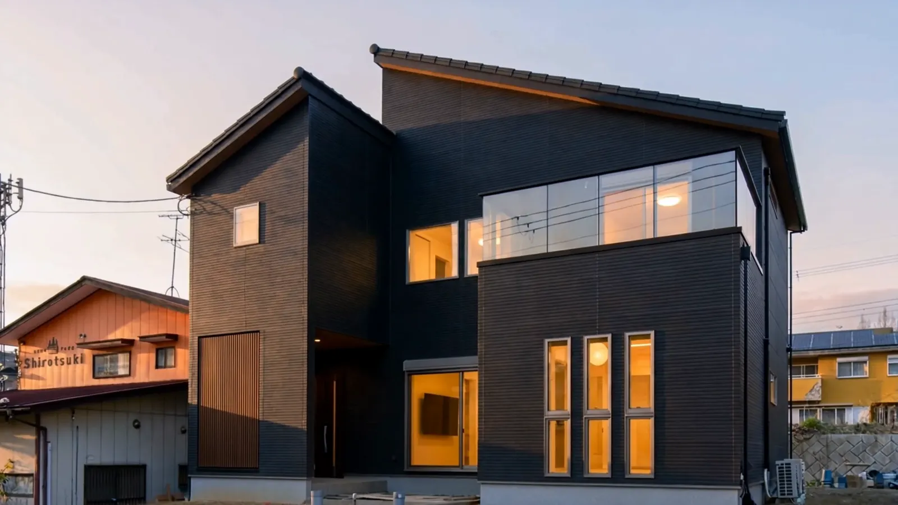
YAMATO FUDOSAN ── NARA
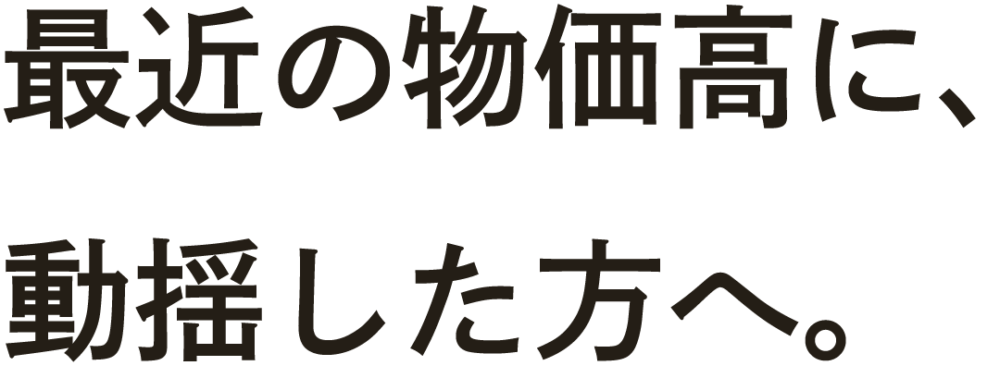
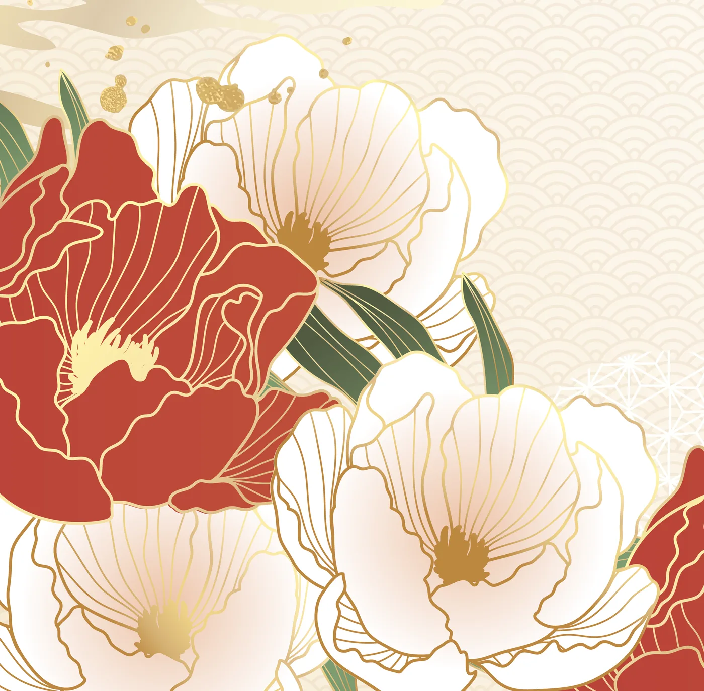
TO YOU
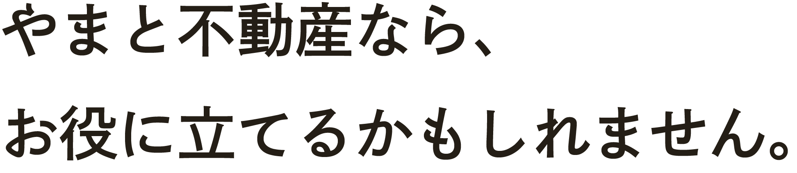

地盤改良費
0円
一般メーカーは120〜150万円
つなぎ融資
0円
建物完成後に一括支払い
仲介手数料
0円
すべて自社所有の土地
土地測量費・土地造成費・水道工事変更費も0円です。
2,000万円規模の土地の場合、通常400万円〜470万円かかる費用が全て0円です。
花鳥風月
PRICE ── 花鳥風月・やまとの家
京
2,480万円
花・風
2,680万円
この価格で、本当に高品質の家が建ちます。
コミコミ価格・税込

Wall旭化成 ヘーベルパワーボード標準

Kitchen
Standardクリナップ ステディア標準

Bath
StandardTOTO サザナ標準

Vanity
StandardTOTO オクターブ Lite標準

Living
Standard天井高2.4m・ハイドア2.3m標準

Tatami
StandardDAIKEN 和紙畳 ここち和座標準

Entrance
StandardLIXIL ジエスタ2標準

Atrium
Design吹き抜け・天井を上げる自由設計
オプションだと思っていた設備が、はじめから付いています。仕様はシリーズにより異なります。

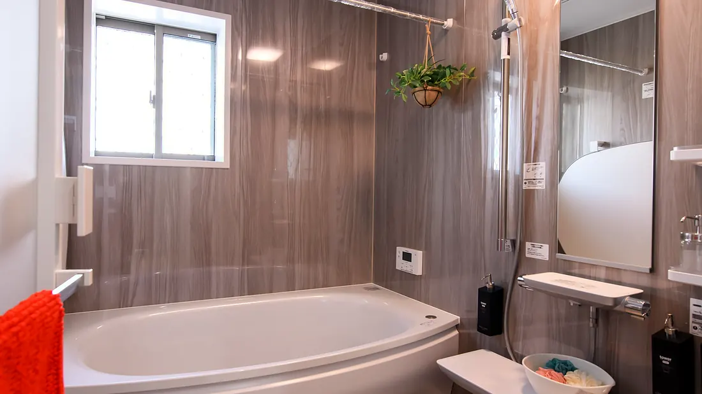
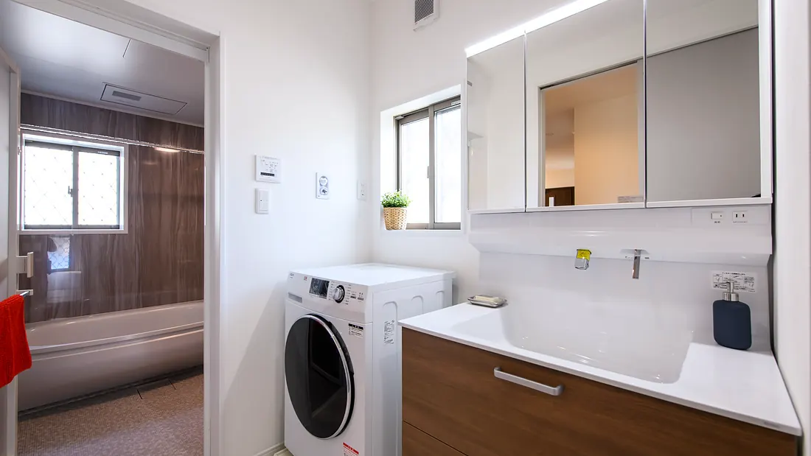

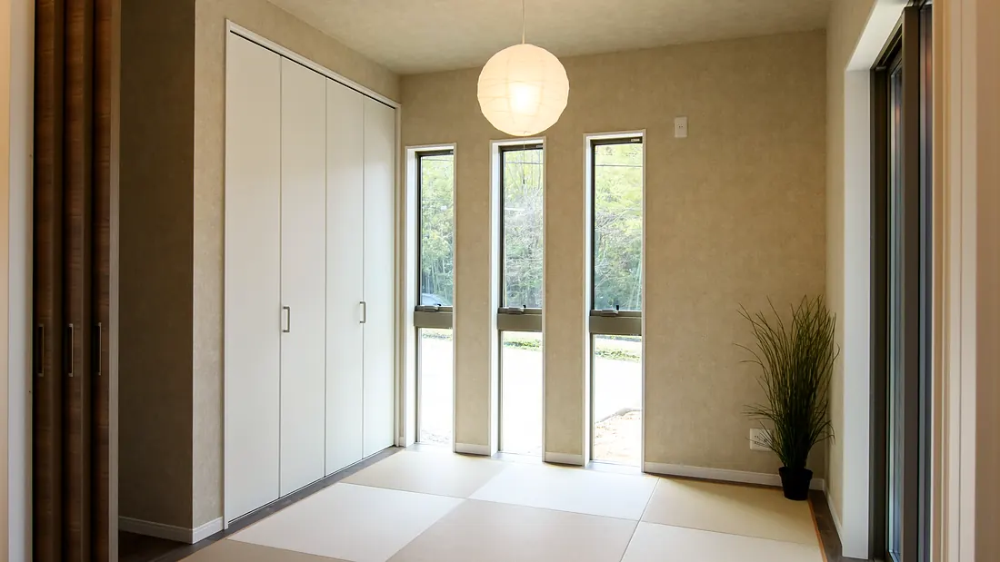
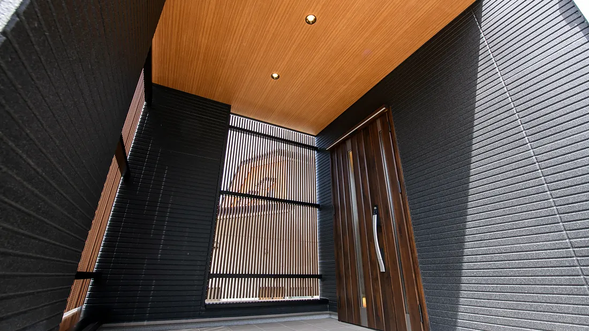
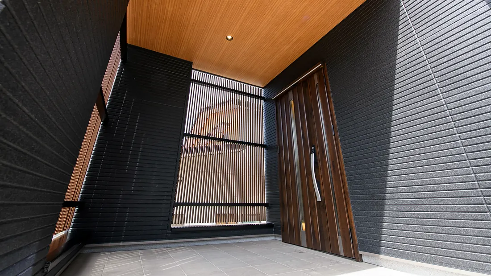
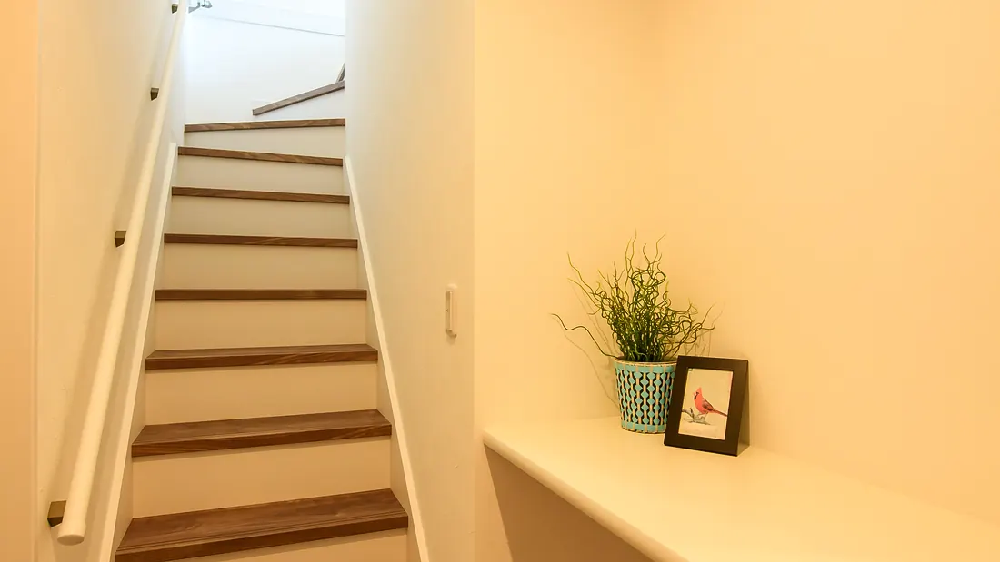
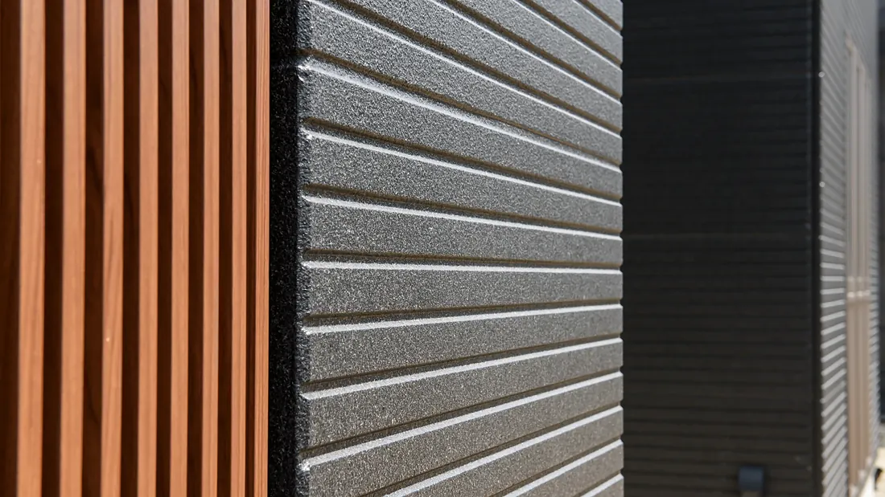
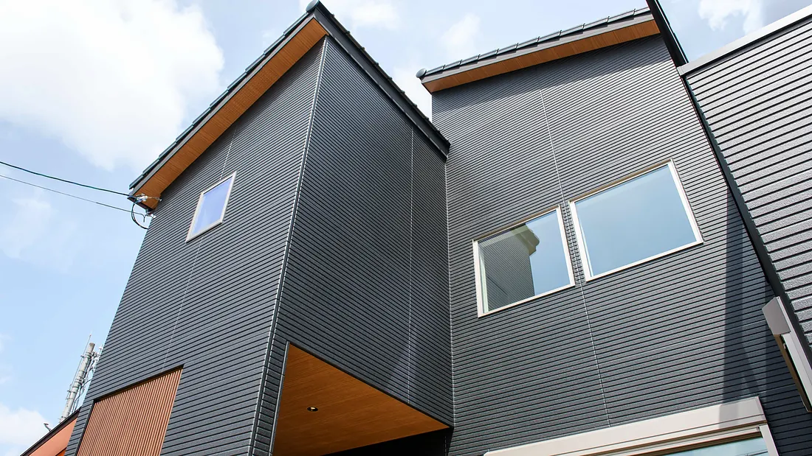
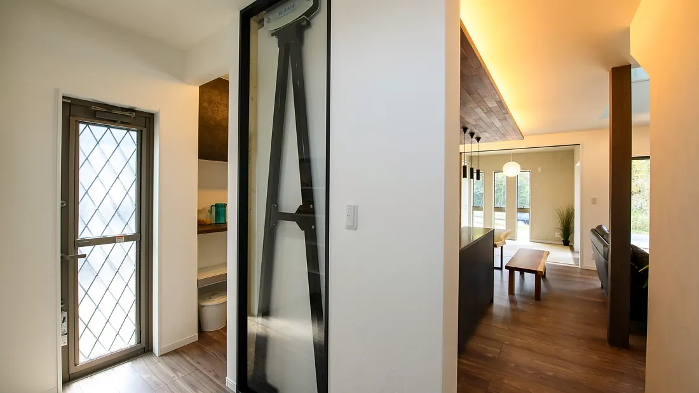
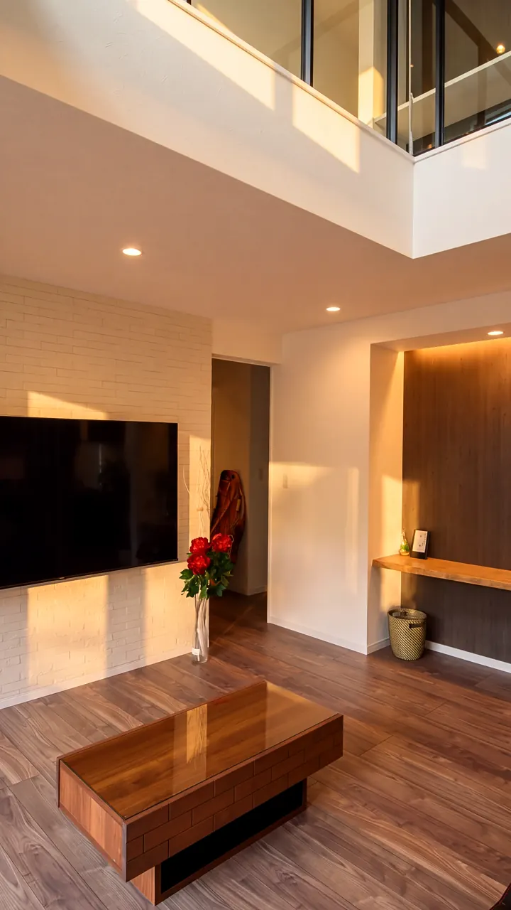